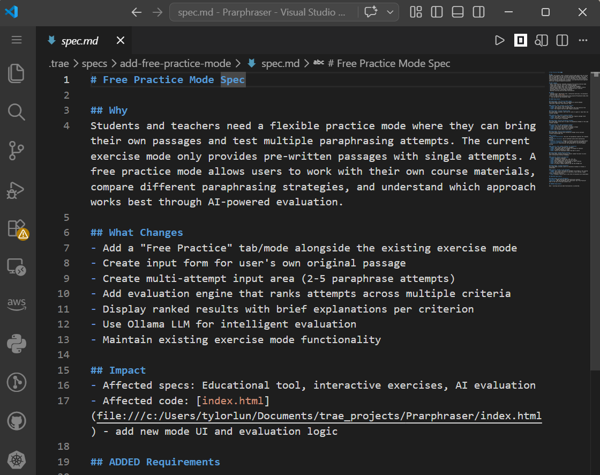
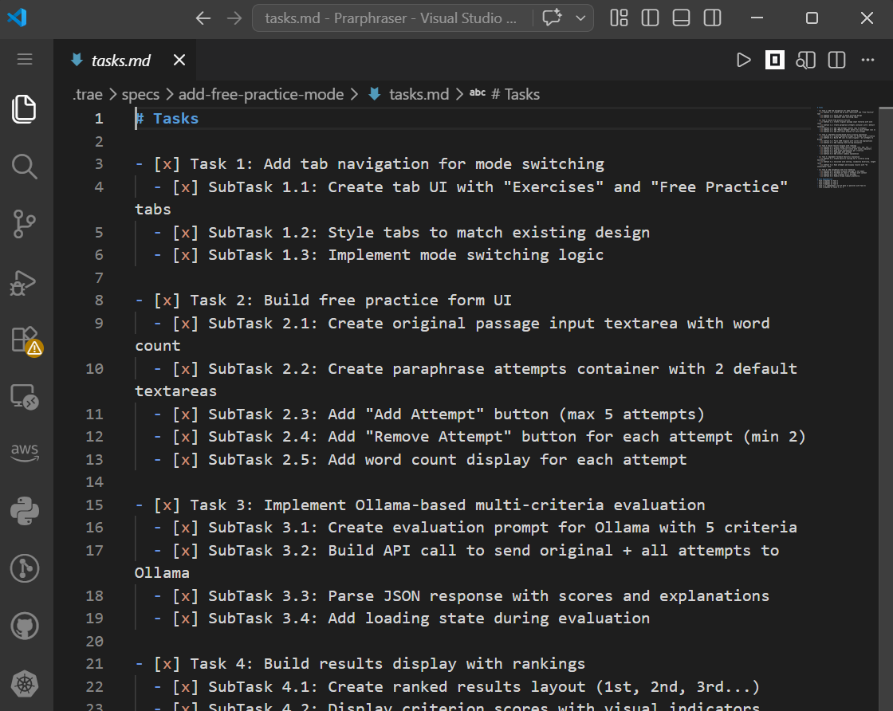
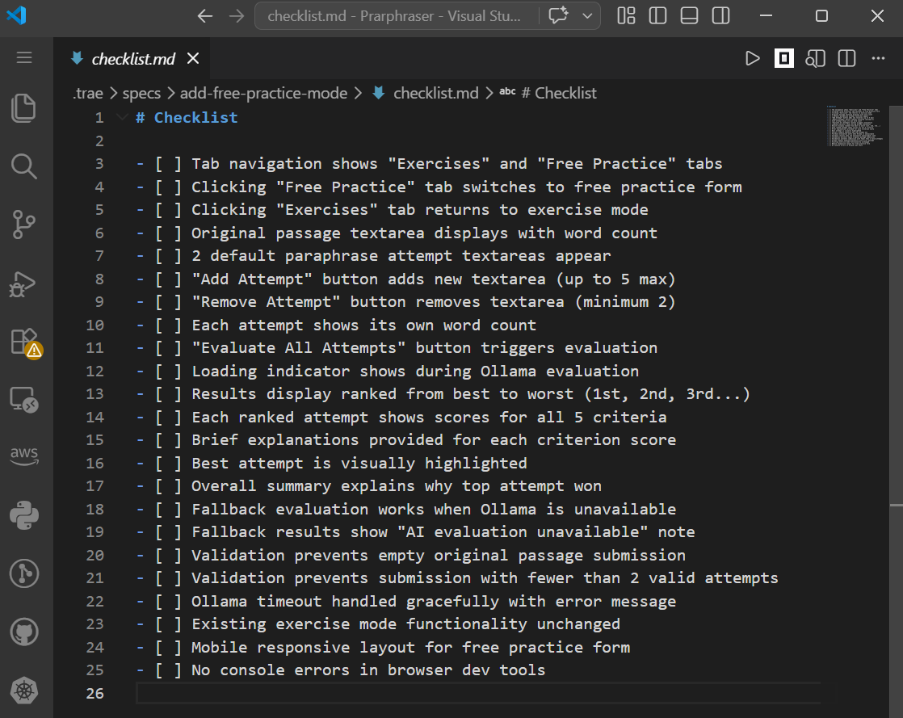

Demonstration Overview
In this demo, you'll use TRAE SOLO's Spec-Driven Development to add a free practice feature to the Paraphrasing Mentor app. This feature allows users to enter an original passage and their own paraphrase attempt, then receive AI-powered feedback on meaning preservation and originality.
Why Spec-Driven Development?
Spec-Driven Development (SDD) is ideal for complex tasks that require multiple modifications:
- Start with a specification that defines exactly what the feature should do
- The AI agent generates code based on the spec, reducing ambiguity
- Task breakdown ensures each modification is tracked and verified
- AI will test by the checklist before marking items complete
Step 1: Start a New Task
Start a new task by typing /spec in the chat. This activates the Spec-Driven Development workflow where the agent will help you define the feature specification before writing any code.
When writing your spec, include the phrase "ask me for clarification" in your prompt. This tells the agent to ask you questions about any ambiguous requirements before generating code, ensuring the implementation matches your exact needs.
Click to reveal the prompt
Add a "Free Practice" feature where users can enter both an original passage and their own paraphrase attempt. Use the local LLM to evaluate the paraphrase on two criteria: meaning preservation and originality. Display scores with feedback. Ask me for clarification on any requirements before implementing.
Step 2: Review the Specification
After you provide your requirements, the agent will generate three files for you to review:
spec.md
The specification document defines what the feature should do, including requirements, user stories, and acceptance criteria.

Click to expandtask.md
The task breakdown lists all the individual steps needed to implement the feature, organized in a logical order.

Click to expandchecklist.md
The checklist provides verification criteria that the AI will use to test each task before marking it complete.

Click to expandReview all three files carefully. If anything needs adjustment, ask the agent to revise before proceeding.
Step 3: Test the Feature
Once the agent completes the implementation, test the feature by entering an original passage and your paraphrase attempt, then clicking "Evaluate" to verify the feedback panel appears with both meaning preservation and originality scores.
If something isn't working as expected, use Vibe Coding as a technique for quick debugging. Describe the issue in plain English and let the AI fix it — Vibe Coding is great for iterative troubleshooting and small fixes.
The Free Practice feature shows how AI evaluation can be applied to user-generated content, not just system-generated output. This pattern — user input → AI evaluation → feedback — is widely applicable across educational tools, writing assistants, and quality control systems.